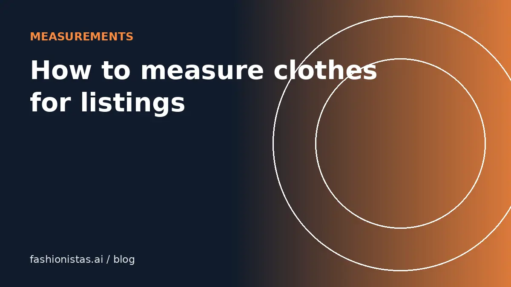

How to measure clothes for online listings

Measurements are the most useful thing you can add to a resale listing. Sizes vary by brand, era and country, and buyers know it, so a few numbers answer the question 'will this fit me?' better than any size label. This guide shows exactly where to measure each type of garment, how to present the numbers, and how buyers can use them.
What you need
- A soft tailor's tape measure, in inches and centimeters.
- A flat surface like a table or clean floor.
- Your phone to photograph at least one measurement, which builds trust.
Lay the garment flat, buttoned or zipped, and smooth it without stretching. Measure across the front of the garment, flat. Most listings give flat measurements, and buyers double the width measurements to get the circumference.
Tops, shirts, jackets and knitwear
| Measurement | How to take it |
|---|---|
| Pit to pit (chest) | Straight across, from armpit seam to armpit seam, about 1 inch below the armpits |
| Length | From the highest point of the shoulder, next to the collar, straight down to the hem |
| Shoulder width | From one shoulder seam to the other, across the back or front |
| Sleeve length | From the shoulder seam to the end of the cuff |
| Hem width | Straight across the bottom hem, useful for cropped and boxy fits |
Pit to pit and length are the two numbers buyers look for first. For jackets and blazers, shoulder width matters most, because shoulders are hard to alter.
Pants, jeans and skirts
| Measurement | How to take it |
|---|---|
| Waist | Straight across the top of the waistband, edge to edge, then double |
| Rise | From the crotch seam up to the top of the waistband, front |
| Inseam | From the crotch seam down the inside leg to the hem |
| Hips | Across the widest part, usually about 7 to 9 inches below the waistband on women's pants |
| Thigh | Across one leg, about 1 inch below the crotch |
| Leg opening | Straight across the hem of one leg |
| Skirt length | From the top of the waistband to the hem |
Rise tells buyers whether pants are low, mid or high rise; inseam tells them whether they'll be cropped or full length on their height.
Dresses and jumpsuits
Combine top and bottom measurements:
- Pit to pit (bust)
- Waist, at the narrowest point or the seam
- Hips, at the widest point
- Total length, from the highest shoulder point to the hem
- Strap length, for slip dresses with adjustable straps, if relevant
- Inseam and rise for jumpsuits
Note stretch: "no stretch", "slight stretch" or "very stretchy". It changes how the numbers translate to fit.
Shoes and accessories
- Shoes: insole length from heel to toe, inside the shoe, and width at the widest part of the sole if you can. Include the tagged size and whether it's men's or women's. See our shoe size guide.
- Bags: width, height and depth, plus strap drop, the distance from the top of the strap to the top of the bag.
- Belts: total length, and the distance from the buckle to each hole, or at least to the middle hole.
- Hats: inside circumference.
Presenting measurements in your listing
Keep it scannable:
Measurements (flat): pit to pit 21 in, length 27 in, shoulders 18 in, sleeve 24 in.
- Use the same format on every listing so your closet looks professional.
- Include inches; add centimeters if you sell internationally or on Vinted.
- Add one photo with the tape laid across the chest or waist.
- If something is approximate, say so.
Combined with a clear title and description, measurements cut your "what are the measurements?" messages to nearly zero.
Common measuring mistakes
- Stretching the fabric while measuring knits. Lay it flat and let it relax.
- Measuring at an angle instead of straight across.
- Measuring the waist at the wrong place. On pants, measure the top of the waistband; on dresses, at the waist seam or narrowest point, and say which.
- Mixing flat and circumference numbers in one listing.
- Rounding wildly. Round to the nearest half inch; buyers comparing closely care.
- Forgetting stretch. Always say whether the fabric stretches.
Measuring vintage and unusual garments
Vintage clothing often has different proportions from modern pieces: higher waists, narrower shoulders, shorter torsos. Include more measurements than usual, especially waist, hips, shoulders and length, because buyers can't rely on the size label at all. For garments with unusual shapes, like capes, kimonos or wrap dresses, describe how you measured: "measured across at widest point" or "wrap fully closed".
Measure once, reuse forever
If you sell a lot of the same brand or style, keep a log of measurements by brand and size. Over time you'll know that a certain brand's size 8 dress is usually around 18 inches pit to pit, which makes listing faster and helps you spot when a garment has been altered or mislabeled.
A quick measuring routine
Measure while you photograph. Keep the tape by your photo setup, measure each item as soon as you've shot it, and type the numbers straight into your phone note for that item. Doing it in the same session takes about a minute per garment and means every listing goes live complete. For bulk listing, measure only the two or three numbers that matter most for that garment type, then add more on request.
Inches or centimeters?
US buyers usually think in inches, while Vinted's audience and international buyers often prefer centimeters. Giving both, such as "pit to pit 21 in / 53 cm", costs a few seconds and removes any doubt. One inch is 2.54 cm.
For buyers: how to use listing measurements
- Find a garment you own that fits you well, of the same type.
- Measure it the same way, flat.
- Compare: within about an inch on pit to pit, waist and length usually means a similar fit.
- Consider fabric. A stretchy knit can be smaller; rigid denim can't.
Save your numbers in your phone for future shopping. Measurements tell you about fit; virtual try-on tells you about the look. Use Try it on with the listing link to see it on you. For converting labels between countries, see our clothing size conversion guide.
FAQ
What is pit to pit measurement?
Pit to pit is the width of a top measured flat, straight across from one armpit seam to the other, about an inch below the armpits. Double it for the chest circumference.
How do you measure the length of a shirt?
Lay it flat and measure from the highest point of the shoulder, next to the collar, straight down to the bottom hem.
How do I measure pants inseam?
Measure from the crotch seam down the inside of the leg to the bottom of the hem.
Should I give flat measurements or doubled?
Flat measurements are standard in resale listings. Say 'flat' so buyers know to double width measurements.
What measurements matter most for jackets?
Shoulder width, pit to pit, sleeve length and length. Shoulders matter most because they're hardest to alter.